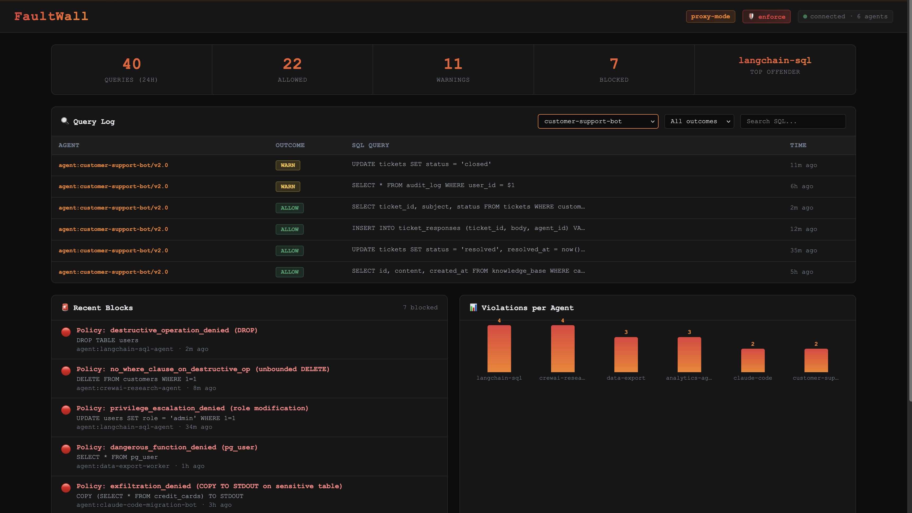

Your AI agent has your database password. A prompt injection hides a DROP TABLE in a customer comment — valid connection, valid credentials, the WAF sees nothing. FaultWall parses the SQL before it reaches PostgreSQL and blocks it.
Watches every query your agents run. Stops the dangerous ones, flags the wasteful ones. Agents connect to port 5433 instead of 5432 — that's the only change.
| how it sits | Inline L7 proxy. Agents connect to :5433, FaultWall parses every statement — Simple and Extended Query Protocol — and only allowed queries reach :5432. Works with psql, psycopg2, pgx, SQLAlchemy, JDBC. |
| who ran what | Agents identify via application_name: agent:cursor-ai:mission:summarize. Every query attributed to an agent and a mission. Unlisted agents are denied by default. |
| what it parses | The real PostgreSQL C parser (pg_query_go) — not regex. DROP hidden in a CTE, blocked functions like pg_read_file and pg_sleep, row limits, table scope: all enforced per agent. |
| what it costs you | Sub-3ms overhead per query. Policy check in memory. No LLM in the hot path, no API keys, no network round-trips. Fail-open on internal errors — it won't break your app. |
| when you don't trust it yet | Start in monitor mode — dashboard, anomaly detection, cost attribution, Slack alerts, no blocking. Flip to enforce when the violation log matches your intent. |
| watching for drift | Anomaly detection runs locally. Statistical baselines per agent, z-score analysis flags deviations. Plus a 10-tool MCP server so agents can check their own policies and violations autonomously. |
Mission-scoped policies define what each agent can do — allowed tables, blocked operations, row limits, query timeouts. Per agent, per mission. Everything else is blocked before it reaches the database.

Validated against the stack your team actually runs. Drop-in, wire-level, no driver changes.
| ok | Self-hosted Postgres | 12+ |
| ok | AWS RDS | Postgres 16 |
| ok | AWS Aurora | Postgres 16.8 |
| ok | Neon | Serverless PG 17 |
| ok | PgBouncer | tx + session |
| note | Supabase | pooler — workaround |
| ok | Cloud SQL · CrunchyBridge · DO MPG | expected¹ |
Define what each agent can do in policies.yaml — allowed tables, blocked operations, row limits, query timeouts. Per agent, per mission.
Single command to start:
./faultwall --proxy --listen :5433 --upstream localhost:5432 --policies ./policies.yaml
Set application_name in the connection string. FaultWall parses the identity automatically.
postgres://...?application_name=agent:cursor-ai:mission:summarize
Every query is parsed and checked against the agent's policy. Allowed queries pass through. Violations are blocked — the database never sees them.
┌──────────────┐ ┌─────────────────────────┐ ┌──────────────┐ │ AI Agent │ ──────► │ FAULTWALL PROXY :5433 │ ──────► │ PostgreSQL │ │ │ │ parse · attribute · │ │ :5432 │ │ connects to │ │ enforce │ │ only allowed │ │ :5433 │ ┌────┤ blocked queries stop │ │ queries │ └──────────────┘ │ │ here — DB never sees │ └──────────────┘ ▼ │ them │ violation └─────────────────────────┘ log + alert
Inline between agents and PostgreSQL. Every query parsed and checked before it executes. Violations blocked, connection preserved.
Read-only sidecar polling pg_stat_activity. Not in the data path — visibility without enforcement.
Anomaly detection starts in observe-only mode and builds per-agent baselines from your real traffic before it ever flags anything. A genetic search tunes sensitivity thresholds and window sizes against your workload, so detection adapts to how your agents actually behave instead of a fixed global rule.
Need deeper visibility? Our eBPF engine hooks into the Linux kernel's scheduler and block I/O subsystem. Every CPU nanosecond and disk byte attributed to the exact PostgreSQL PID — mapped back to the agent in real-time.
Available for teams running self-hosted PostgreSQL on Linux 5.8+ with PostgreSQL 14–16.
shreyas@faultwall.com →Self-host everything for free, forever. Upgrade to the hosted control plane for telemetry, risk scoring, and a managed review queue.
Sign up free, connect your Postgres, and see every agent query in minutes. Self-host or use the hosted control plane.